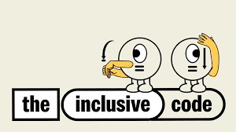
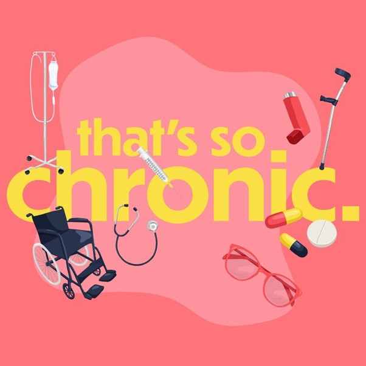

 <main>
    <section class="articles-podcasts">
      <div class="section-title">
        <h2>Articles & Podcasts</h2>
      </div>

      <div class="row">
        <div class="column">
          <h3>Articles</h3>

          <p>
            <a href="https://www.asiamediacentre.org.nz/invisible-twice-the-struggles-of-asian-students-with-disabilities-in-nz-universit" target="_blank" rel="noopener">
              Asian Students Article
            </a>
          </p>

          <p>
            <a href="https://www.otago.ac.nz/news/newsroom/disability-action-plan-launch-signifies-commitment-to-inclusivity" target="_blank" rel="noopener">
              Disability Action Plan Launch
            </a>
          </p>

          <p>
            <a href="https://www.scoop.co.nz/stories/ED2504/S00023/disability-and-progress-relational-recoil-from-ais-silver-bullet.htm" target="_blank" rel="noopener">
              Disability & AI
            </a>
          </p>

          

          <p>
            <a href="https://auckland.scoop.co.nz/2024/10/underserved-communities-unite-to-create-the-inclusive-code-a-tool-to-accelerate-inclusivity-and-representation-in-nz/" target="_blank" rel="noopener">
              Inclusive Code Article
            </a>
          </p>

          
        </div>

        <div class="column">
          <h3>Podcasts</h3>

          <p>
            <a href="https://nzpod.co.nz/podcast/baskets-of-knowledge/episode-112-following-your-heart-beat-to-make-a-ch" target="_blank" rel="noopener">
              Baskets of Knowledge Podcast
            </a>
          </p>

          

          <p>
            <a href="https://shows.acast.com/thatssochronic/episodes/sean-prenter-traumatic-brain-injury" target="_blank" rel="noopener">
              That's So Chronic Podcast
            </a>
          </p>

          
        </div>
      </div>
    </section>
  </main>

</body>
</html>
